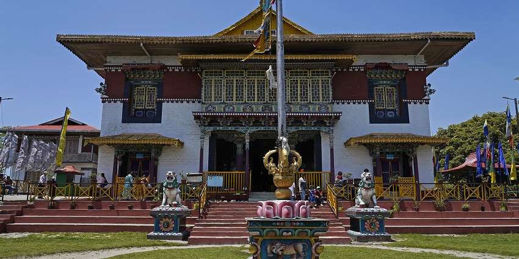
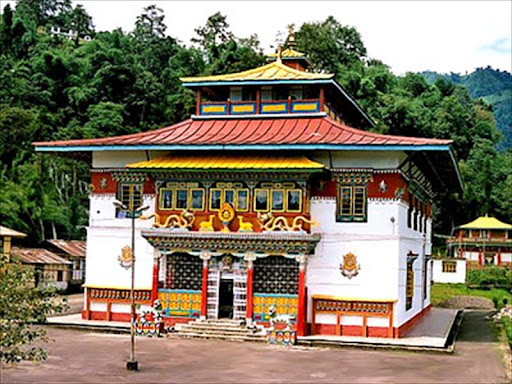
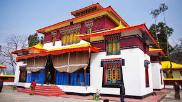

WELCOME TO SIKKIM
Embark on a digital journey through the mystical land of monasteries
🏔️
Explore Monasteries
Discover ancient Buddhist temples and their history.🍜
Taste Local Cuisine
Sample Sikkimese flavours and traditions.🎯
Unlock Achievements
Complete quests and earn your rewards.🗺️
Interactive Map
Navigate with real-time tracking and routing.💡 SYSTEM TIPS
📱 Enable location services for navigation
🏯 Visit all monasteries to unlock status
🍴 Try local foods for taste XP
📸 Document your journey for bonus
CULTURE & HERITAGE
Discover Sikkim's rich cultural tapestry.
📚 HISTORY
Ancient kingdom founded in 1642, with centuries of Buddhist heritage and royal lineage.🌱 ORIGIN
Land of Lepchas. Tibetan and Nepali influences🎭 TRADITIONS
Mask dances, musical festivals, rituals🏛️ ARCHITECTURE
Iconic monasteries, wood carvings, murals🎨 ART & CRAFT
Thangka paintings, wood, and handloom📖 LANGUAGES
Nepali, Sikkimese, Lepcha, Hindi, English📥 DOWNLOAD E-RESOURCES
MONASTERY ARCHIVE
Explore the sacred sites

RUMTEK MONASTERY
Seat of the Karmapa, golden roofs, sacred rituals.

PEMAYANGTSE
Second oldest, Zangdok Palri sculpture.

RALANG MONASTERY
Cham dances, murals, festivals.

DUBDI MONASTERY
Oldest, forest retreat.

PHODONG MONASTERY
Kagyu lineage, festivals, murals.

ENCHEY MONASTERY
Guardian, Cham festival.

TSUKLAKHANG
Royal chapel, relics, flags.
FOOD QUEST
Your culinary adventure!
🥟
Momos
Steamed dumplings. Easy+50 XP
🍜
Thukpa
Noodle soup. Medium+75 XP
🥘
Phagshapa
Pork curry. Hard+100 XP
🧀
Chhurpi
Yak cheese. Medium+60 XP
🍺
Chang
Millet beer.Hard+80 XP
🍰
Sel Roti
Sweet bread. Easy+40 XP
🥬
Gundruk
Fermented greens. Medium+70 XP
🍲
Kinema
Fermented soy curry. Hard+90 XP
ACHIEVEMENTS
Unlock rewards
🍽️ Taste Achievements
🥟
FAST BITETry your first Sikkimese dish
+100 XP
LOCKED
🍜
SOUP MASTERTry 3 thukpa
+250 XP
LOCKED
🧀
CHEESE CONNOISSEURTry chhurpi
+150 XP
LOCKED
🍺
CHANG CHAMPIONTry millet beer
+200 XP
LOCKED
🏔️ Explore Achievements
🏯
MONASTERY VISITORVisit 1 monastery
+100 XP
LOCKED
🎭
CULTURE EXPLORERComplete culture section
+300 XP
LOCKED
🗺️
NAVIGATORUse map feature 5×
+150 XP
LOCKED
👑
SIKKIM MASTERComplete all achievements
+1000 XP
LOCKED
INTERACTIVE MAP
Live navigation and monastery routing
🛣️ ROUTE TRACKER
Distance: --
ETA: --
Select any marker on the map for directions